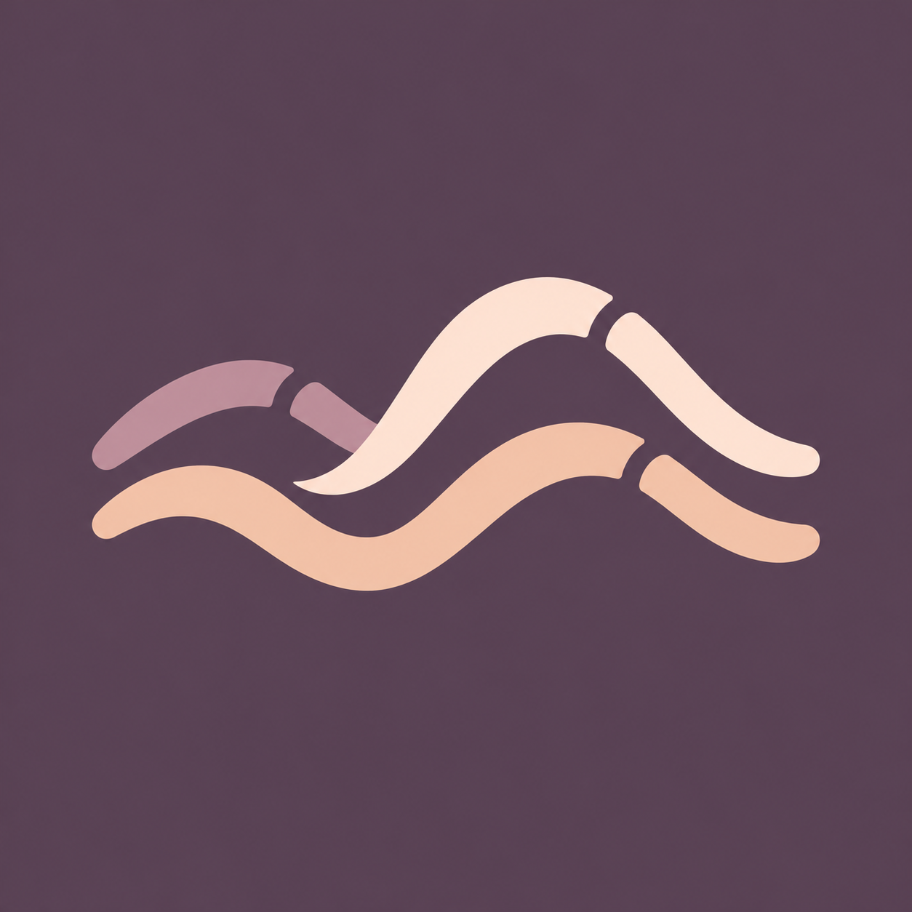
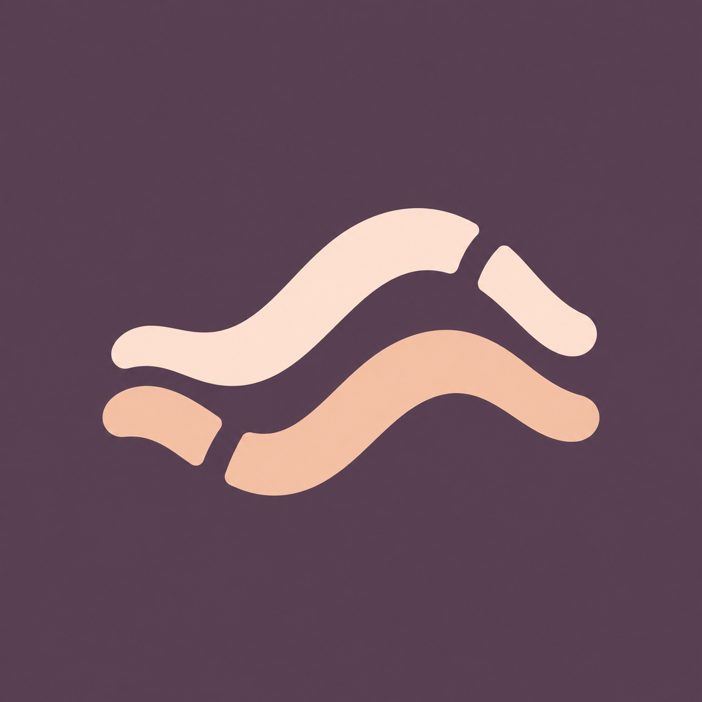
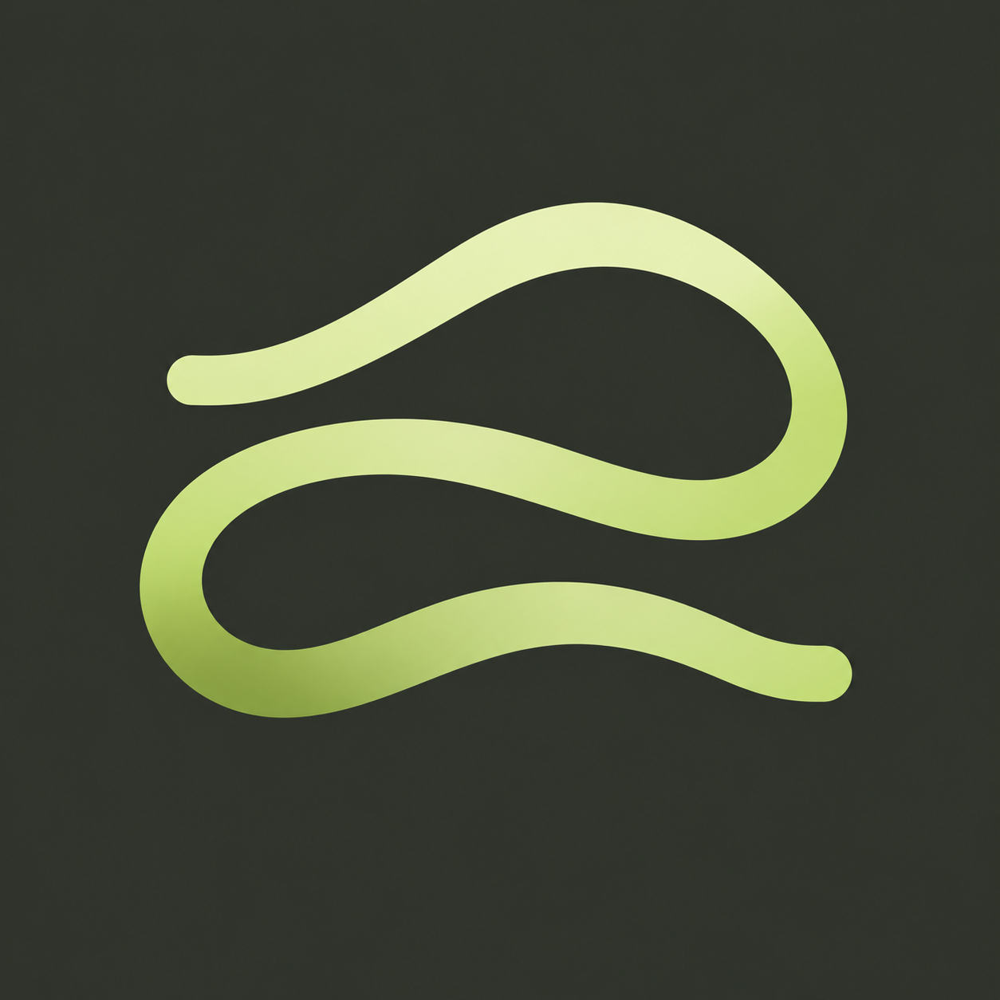
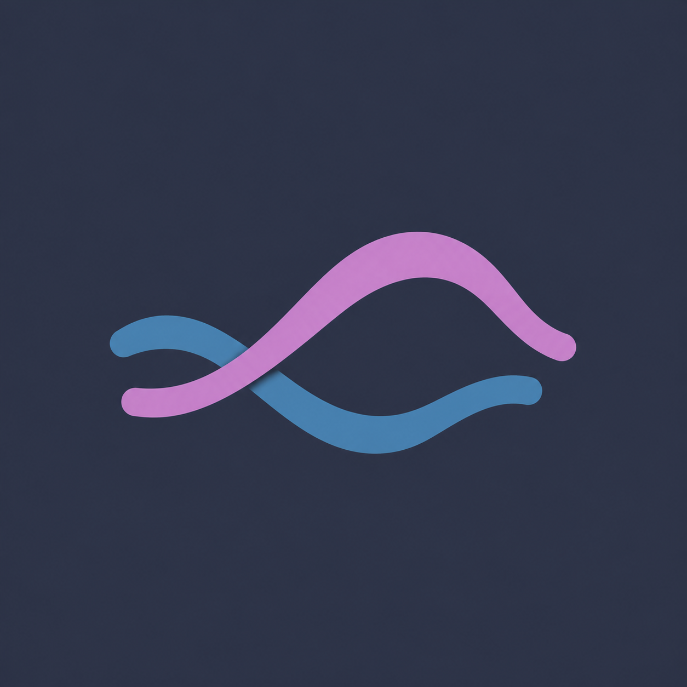
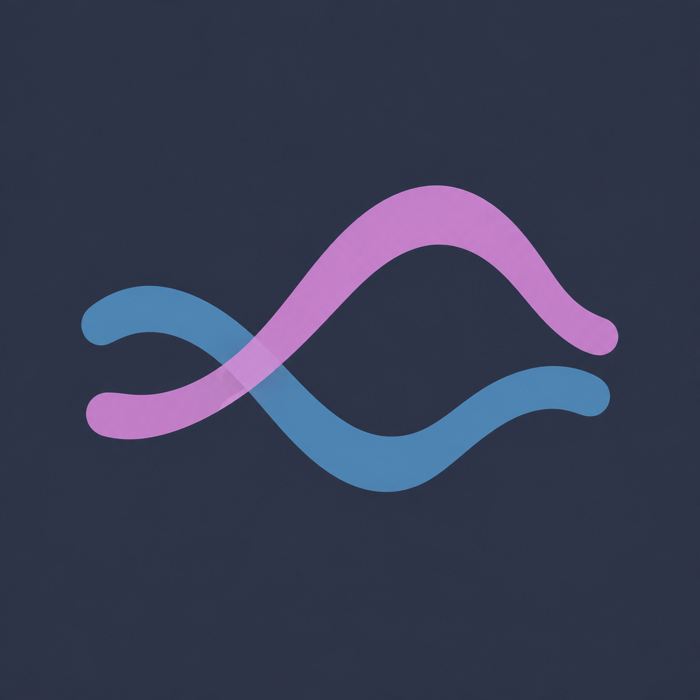

각 행은 같은 출발 시안 · 정돈 / 구조와 레이어 / 볼드

끊김의 폭과 끝을 일관되게
끊김 위치를 옮겨 새로운 리듬 형성

두 곡선과 두 끊김으로 단순화
안쪽 여백과 곡선의 굵기를 명확하게
골드 윤곽의 두 면과 빈 공간을 대비
짧고 두꺼운 윤곽으로 하나의 기호화

하나의 경로와 두 회전부를 매끄럽게
세 층의 높이 차이를 더 분명하게
굵고 간결한 연속선의 실루엣

서로 다른 두 곡률과 한 번의 교차

교차에서 생기는 라일락과 블루의 깊이
굵은 두 획과 넓은 골짜기로 무게 강화